Chablis — Trois appartements
Ce projet porte sur la rénovation d'une maison à Chablis et sa transformation en trois appartements distincts. La division du bâti existant a été pensée pour donner à chaque logement une entrée, un éclairage naturel et des espaces de vie propres, tout en respectant la structure et le caractère de la maison d'origine.
Alpha Architecture intervient sur ce projet en mission complète : conception, suivi d'exécution et décoration, du dessin des plans jusqu'à l'aménagement intérieur de chaque appartement.
- Lieu
- Chablis, Yonne
- Année
- 2026
- Programme
- Rénovation — division en 3 logements
- Mission
- Conception, suivi d'exécution, décoration
- Surface
- À préciser
- Statut
- Travaux achevés
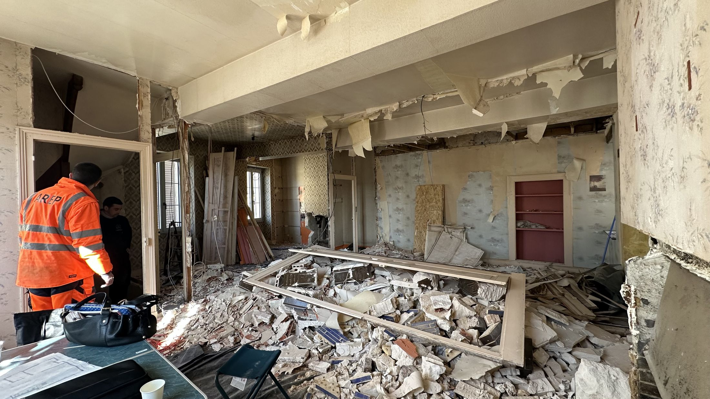
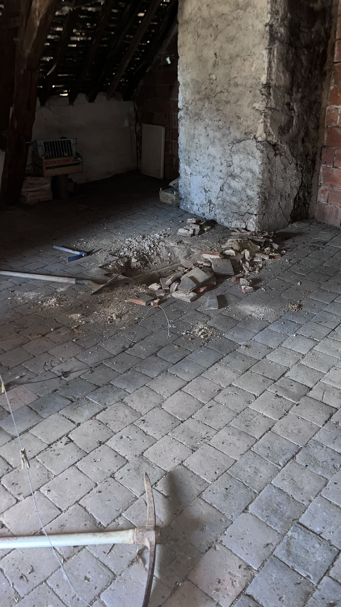
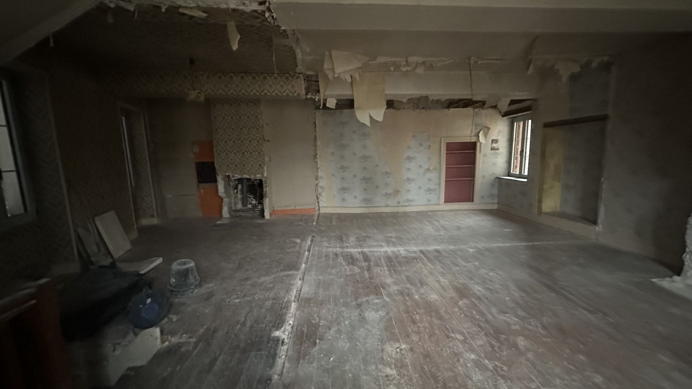
/assets/images/chablis-plan-division.jpg/assets/images/chablis-coupe.jpgAprès travaux — trois logements
03 — LIVRÉAPPARTEMENT MANSARDÉ
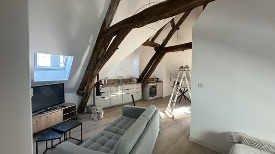
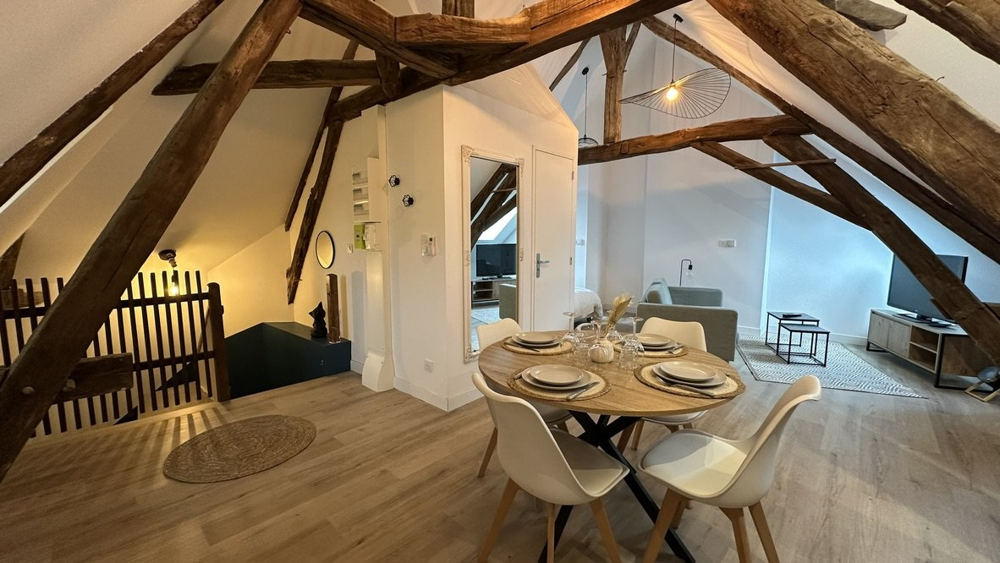
APPARTEMENT REZ-DE-CHAUSSÉE
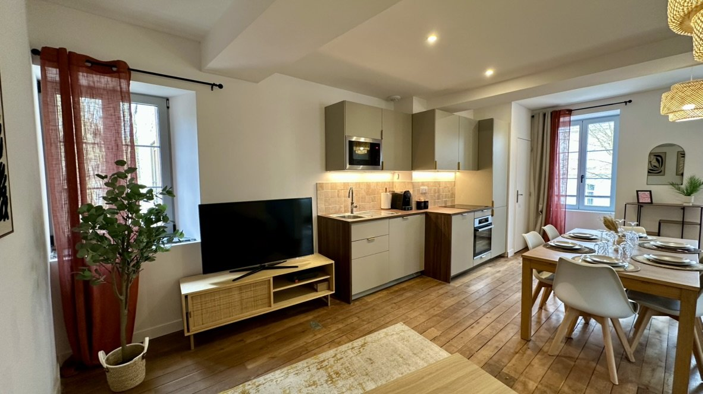
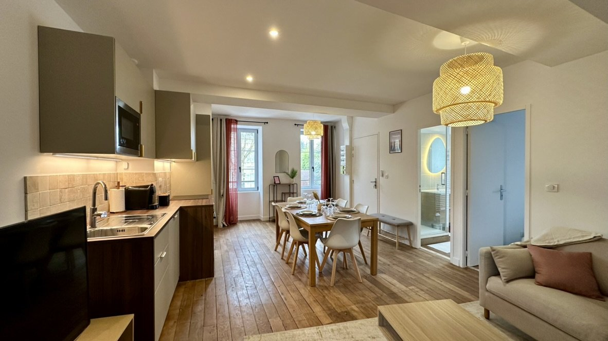
TROISIÈME APPARTEMENT
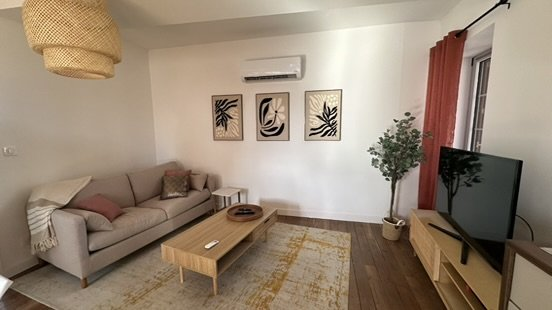
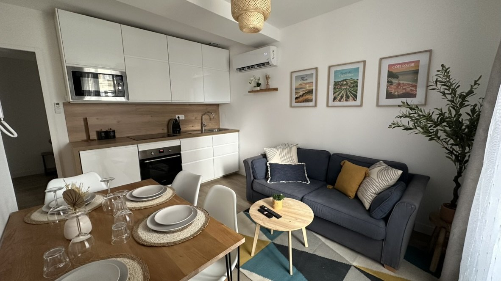
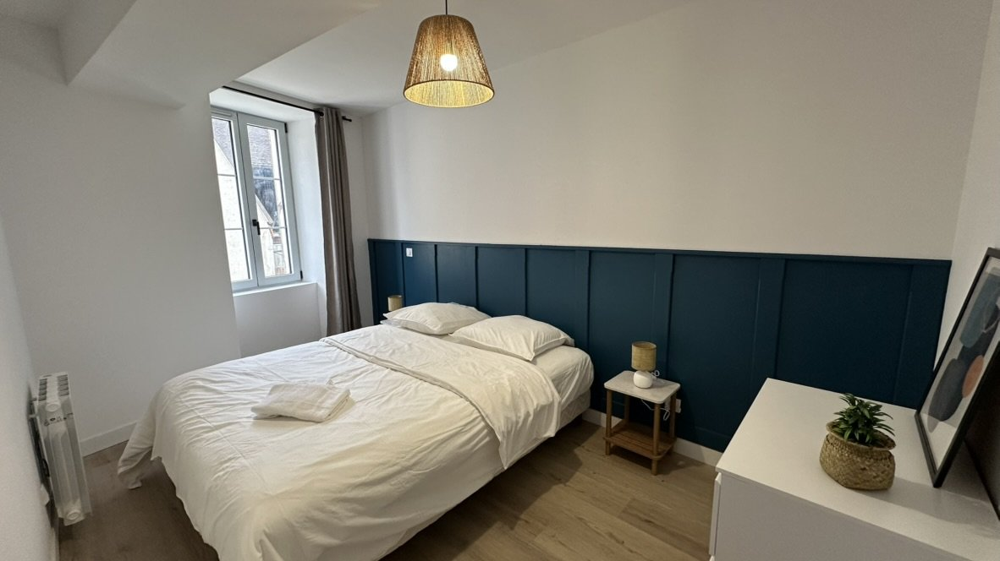
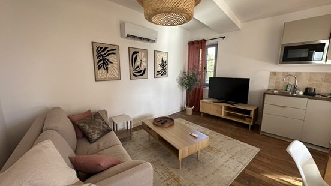